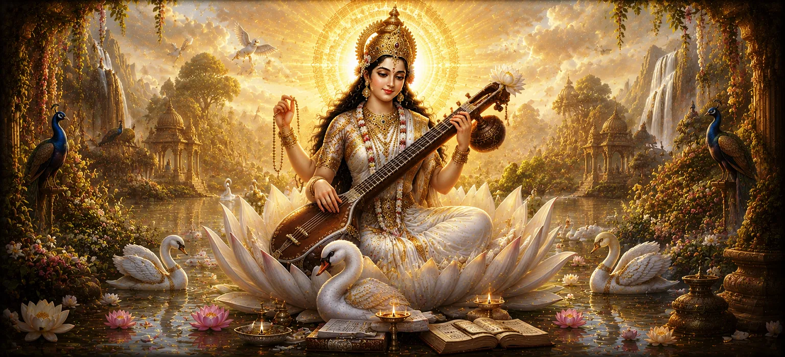

देवी सरस्वती का प्राकट्य
भयंकर ब्रह्मांडीय युद्धों और अध्याय 47 में वर्णित असुर शक्तियों की निर्णायक हार के बाद, उमा संहिता का अड़तालीसवां अध्याय शुद्ध ज्ञान की कृपा में एक शांत और उत्थानकारी बदलाव का परिचय देता है।
यह अध्याय ज्ञान, पवित्र वाणी, कला और मानव बुद्धि की परम रोशनी की अवतार देवी सरस्वती की गौरवशाली अभिव्यक्ति का वर्णन करता है।
उनकी दिव्य उपस्थिति के माध्यम से, सृष्टि को आध्यात्मिक विकास के लिए आवश्यक सद्भाव, सीख और उच्च समझ मिलती है।
अध्याय 48 की मुख्य बातें
शांत परिवर्तन
कथा को युद्धक्षेत्र से ज्ञान के शांतिपूर्ण क्षेत्र में स्थानांतरित करता है।
बुद्धि का अवतार
देवी सरस्वती को विद्या और शास्त्रों के सर्वोच्च स्रोत के रूप में प्रस्तुत किया गया है।
सद्भाव और कला
प्रेरक संगीत, ललित कला और रचनात्मक अभिव्यक्ति में उनकी भूमिका पर प्रकाश डाला गया है।
वाणी की शुद्धता
भाषा, वाक्पटुता और सच्चे संचार पर उसके शासन की पड़ताल करता है।
बुद्धि का प्रकाश
वर्णन करता है कि कैसे उनकी कृपा आंतरिक अज्ञानता को दूर करती है और उच्च चेतना को जागृत करती है।
ब्रह्मांडीय संतुलन
दिखाता है कि कैसे ज्ञान लौकिक जीविका और संस्कृति की विजय को पूरा करता है।
इस अध्याय में मुख्य विषय
- 01 ब्रह्मांडीय युद्धों का शांत परिणाम →
- 02 देवी सरस्वती की दिव्य अभिव्यक्ति →
- 03 रूप और पवित्र प्रतिमा की शुद्धता →
- 04 ज्ञान, विद्या और शास्त्र पर शासन →
- 05 संगीत, ललित कला और वीणा की प्रेरणा →
- 06 वाक् (वाणी) और वाकपटुता पर महारत →
- 07 आंतरिक अंधकार और अज्ञान को दूर करना (अज्ञान) →
- 08 आध्यात्मिक विकास में सरस्वती की आवश्यक भूमिका →
- 09 सृष्टि में बुद्धि का गूढ़ महत्व →
- 10 देवी उमा के प्रकटीकरण में परिवर्तन →
ब्रह्मांडीय युद्धों का शांत परिणाम
अध्याय 48 की शुरुआत ब्रह्मांड में एक शांतिपूर्ण माहौल के साथ होती है, क्योंकि अधर्म के खिलाफ अशांत युद्ध समाप्त होते हैं, जिससे उच्च आध्यात्मिक मूल्यों को पनपने का मौका मिलता है।
ब्रह्मांड उग्र सुरक्षा से रचनात्मक सांस्कृतिक अनुग्रह की ओर परिवर्तित हो रहा है।
देवी सरस्वती की दिव्य अभिव्यक्ति
इस दिव्य शांति के बीच, देवी सरस्वती शुद्ध सफेद पोशाक में अपनी उज्ज्वल प्रतिभा के साथ प्रकट होती हैं, जो सर्वोच्च पवित्रता, बौद्धिक स्पष्टता और असीम ज्ञान का प्रतीक है।
उनकी उपस्थिति सभी क्षेत्रों को सीखने की रोशनी से भर देती है।
रूप और पवित्र प्रतिमा की शुद्धता
पाठ में सफेद कमल पर बैठे उनके मनमोहक रूप का विवरण दिया गया है, जो पवित्र ग्रंथ (वेद), एक क्रिस्टल माला (जप माला) और ब्रह्मांड को संगीतबद्ध करने वाला संगीत वाद्ययंत्र धारण किए हुए हैं।
उनकी प्रतिमा-विज्ञान का प्रत्येक पहलू मानसिक परिष्कार और आध्यात्मिक संतुलन का प्रतिनिधित्व करता है।
ज्ञान, विद्या और शास्त्र पर शासन
देवी सरस्वती ज्ञान, कला, विज्ञान और आध्यात्मिक ज्ञान की सभी शाखाओं की सर्वोच्च शासक के रूप में स्थापित हैं, जो साधकों और संतों को समान रूप से बुद्धि प्रदान करती हैं।
उनकी कृपा से, पवित्र ग्रंथों और दार्शनिक सत्यों को समझा जाता है।
संगीत, ललित कला और वीणा की प्रेरणा
वीणा पकड़कर, वह सृजन को दिव्य लय, माधुर्य और सौंदर्य अभिव्यक्ति से भर देती है, यह दर्शाती है कि कला आंतरिक अनुभूति और आनंद का एक उन्नत मार्ग है।
माधुर्य दिव्य साम्य का माध्यम बन जाता है।
वाक् (वाणी) और वाकपटुता पर महारत
वाक्देवी के रूप में, वह बोली जाने वाली और लिखित भाषा को नियंत्रित करती हैं, यह सुनिश्चित करती हैं कि शब्दों में कलह या धोखे के बजाय सच्चाई, उपचार शक्ति और उत्थानकारी प्रेरणा हो।
सच्ची वाक्पटुता उसकी कृपा के साथ संरेखण से उत्पन्न होती है।
(स्रोत: उमा संहिता अध्याय 48)
आंतरिक अंधकार और अज्ञान को दूर करना (अज्ञान)
उनका चमकदार सफेद रंग अंधेरे अज्ञान (तमस और अज्ञान) के पूर्ण उन्मूलन का प्रतीक है, जो मानव मन के आंतरिक कक्षों को स्पष्टता और विवेक के साथ रोशन करता है।
भ्रम के विरुद्ध बुद्धि परम दीपक के समान कार्य करती है।
(स्रोत: उमा संहिता अध्याय 48)
आध्यात्मिक विकास में सरस्वती की आवश्यक भूमिका
पाठ बताता है कि जबकि ताकत और धन जीवन की रक्षा और रखरखाव करते हैं (जैसा कि पहले अध्यायों में देखा गया है), सच्ची मुक्ति के लिए देवी सरस्वती द्वारा प्रदत्त आत्म-जागरूकता की आवश्यकता होती है।
वह भौतिक अस्तित्व और दिव्य अनुभूति के बीच की दूरी को पाटती है।
(स्रोत: उमा संहिता अध्याय 48)
सृष्टि में बुद्धि का गूढ़ महत्व
दार्शनिक रूप से, सरस्वती चेतना के प्रवाह (वाक और मानस) का प्रतिनिधित्व करती है जो अपने दिव्य स्रोत की ओर लौटती है, जिससे साधक को सामान्य संवेदी धारणा से परे जाने की अनुमति मिलती है।
उनकी अभिव्यक्ति दिव्य स्त्री ऊर्जा के आवश्यक त्रय को पूरा करती है।
(स्रोत: उमा संहिता अध्याय 48)
देवी उमा के प्रकटीकरण में परिवर्तन
अध्याय 48 में ज्ञान और विद्या का सर्वोच्च शासन स्थापित करने के बाद, कथा अध्याय 49 में अगले गहन रहस्योद्घाटन की तैयारी करती है।
यह पाठ सर्वोच्च दिव्य मां और भगवान शिव की पत्नी देवी उमा की अंतिम अभिव्यक्ति के लिए मंच तैयार करता है।
(स्रोत: उमा संहिता अध्याय 48)
अध्याय 48 की मुख्य शिक्षाएँ
सीखने का सर्वोच्च मूल्य
सच्चा विकास और सभ्यता पवित्र ज्ञान और बुद्धिमत्ता की खेती पर निर्भर करती है।
बुद्धि की शुद्धता
देवी सरस्वती मन को शुद्ध करती हैं, भ्रम, संदेह और आंतरिक अंधकार को दूर करती हैं।
अध्यात्म के रूप में कला
संगीत, कविता और ललित कलाएँ मानव आत्मा को अनंत से जोड़ने वाले दिव्य माध्यम हैं।
ध्यानपूर्ण भाषण
शब्दों में गहन रचनात्मक शक्ति होती है और इसका उपयोग सच्चाई, अनुग्रह और जागरूकता के साथ किया जाना चाहिए।
शांतिपूर्ण सद्भाव
सांसारिक संघर्षों की उथल-पुथल के बाद बुद्धि शांति और भावनात्मक संतुलन लाती है।
प्रबुद्ध जीवन
सरस्वती का आह्वान करने से उद्देश्य की स्पष्टता, उच्च शिक्षा और आत्म-साक्षात्कार होता है।
आध्यात्मिक चिंतन
उमा संहिता का अध्याय 48 ब्रह्मांडीय युद्ध के बाहरी संघर्षों से ज्ञान और कला के आंतरिक अभयारण्य तक एक सुखद और गहन परिवर्तन प्रदान करता है। देवी सरस्वती की अभिव्यक्ति हमें याद दिलाती है कि नकारात्मक बाहरी ताकतों को हराना केवल आधी लड़ाई है; सच्ची आध्यात्मिक जीत के लिए मन को दिव्य ज्ञान से रोशन करना, शुद्ध वाणी विकसित करना और अपनी चेतना को ब्रह्मांड की सामंजस्यपूर्ण लय में समायोजित करना आवश्यक है। उनकी कृपा से, शिक्षा एक पवित्र यज्ञ बन जाती है, और प्रत्येक रचनात्मक अभिव्यक्ति ईश्वर को भेंट में बदल जाती है।
अध्याय 48 का संदेश जीना
पवित्र ग्रंथों, प्रेरक साहित्य, या आपकी चेतना को उन्नत करने वाले ज्ञान का अध्ययन करने के लिए प्रतिदिन समय समर्पित करें।
अपने भाषण में सचेतनता का अभ्यास करें, यह सुनिश्चित करें कि आपके शब्द सच्चे, सौम्य और दूसरों के लिए उत्थानकारी हों।
आध्यात्मिक ध्यान और आंतरिक अभिव्यक्ति के रूप में कला, संगीत या रचनात्मक लेखन से जुड़ें।
प्रमुख आध्यात्मिक अवधारणाएँ
ज्ञान, विद्या, कला, ज्ञान और पवित्र वाणी के सर्वोच्च देवता।
वाणी, भाषा और संचार की देवी और अधिष्ठात्री शक्ति।
सच्चा आध्यात्मिक और बौद्धिक ज्ञान जो आत्मा को अज्ञानता से मुक्त करता है।
सरस्वती द्वारा धारण किया जाने वाला शास्त्रीय तार वाद्य, ब्रह्मांडीय सद्भाव का प्रतीक है।
गहन पारलौकिक ज्ञान और परम सत्य की प्राप्ति।
शुद्ध, प्रकाशमान और शांतिपूर्ण दिव्य ऊर्जा जो स्पष्टता और उन्नति को बढ़ावा देती है।
अध्याय सारांश
उमा संहिता अध्याय 48 देवी सरस्वती की दिव्य अभिव्यक्ति का विवरण देकर कथा में एक शांत और सुंदर बदलाव लाता है। पिछले अध्याय में अधर्म के विनाश के बाद, सरस्वती सृष्टि को सर्वोच्च ज्ञान, कला, संगीत और वाणी की शुद्धता का आशीर्वाद देने के लिए प्रकट हुईं। उनकी उपस्थिति आंतरिक अंधकार को दूर करती है और मानव चेतना को उच्च आध्यात्मिक समझ की ओर बढ़ाती है, जिससे अध्याय 49 में देवी उमा की अंतिम अभिव्यक्ति के लिए मंच तैयार होता है।
अक्सर पूछे जाने वाले प्रश्न
① उमा संहिता अध्याय 48 का मुख्य विषय क्या है?
मुख्य विषय देवी सरस्वती की दिव्य अभिव्यक्ति है, जो ब्रह्मांडीय युद्धों के बाद सर्वोच्च ज्ञान, शिक्षा, कला और पवित्र भाषण का प्रतीक है।
② अध्याय 48 अध्याय 47 का अनुसरण कैसे करता है?
अध्याय 47 में विस्तृत गहन युद्ध और असुर शक्तियों के विनाश के बाद, अध्याय 48 ज्ञान और संस्कृति की कृपा में एक शांत और सामंजस्यपूर्ण परिवर्तन लाता है।
③ इस अध्याय में देवी सरस्वती के साथ कौन से गुण जुड़े हुए हैं?
देवी सरस्वती पवित्रता, सद्भाव की वीणा, पवित्र शास्त्र, वाक्पटुता और बुद्धि की रोशनी से जुड़ी हैं।
④ अध्याय 48 अध्याय 49 से कैसे जुड़ता है?
अध्याय 48 निर्बाध रूप से अध्याय 49 में प्रवाहित होता है, जो देवी उमा की अभिव्यक्ति का विवरण देकर क्रम को जारी रखता है।
⑤ देवी सरस्वती के प्राकट्य का आध्यात्मिक महत्व क्या है?
उनकी उपस्थिति दर्शाती है कि अंधेरे पर सच्ची जीत शिक्षा, आत्म-बोध और उच्च आध्यात्मिक ज्ञान के माध्यम से कायम और समृद्ध होनी चाहिए।
⑥ यह अध्याय प्रस्तुति किन भाषाओं में उपलब्ध है?
अध्याय 48 की यह प्रस्तुति अंग्रेजी और बंगाली दोनों में उपलब्ध है।
"शुद्ध सफेद रंग में सजी और सद्भाव की वीणा धारण करने वाली, देवी सरस्वती आंतरिक अंधकार को दूर करती हैं और सृष्टि को सर्वोच्च ज्ञान और पवित्र शिक्षा का आशीर्वाद देती हैं।"
उमा संहिता के माध्यम से जारी रखें
अध्याय 48 देवी सरस्वती की दिव्य अभिव्यक्ति पर प्रकाश डालता है। देवी उमा के प्रकटीकरण को देखने के लिए अध्याय 49 में आगे बढ़ें।